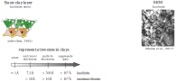

Terracotta
A simple hydrodynamic model for clay
Max Wiebicke, Itai Einav
The University of Sydney
Sydney, 21st November 2023
Clay is strongly rate-dependent
Experiment from Krieg and Niemunis (1997)
Fabric of clay



A new state variable
An analogy to thermal temperature (Jiang and Liu, 2009)
The Model
Prediction - Oedometric compression
Experiment from Krieg and Niemunis (1997)